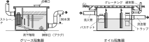

2023年
問題127 排水トラップと阻集器に関する語句の組合せとして，最も不適当なものは次のうちどれか．
（1）ドラムトラップ 非サイホントラップに分類
（2）雨水トラップ ルーフドレンからの悪臭の防止
（3）オイル阻集器 ガソリン及び油類の流出阻止，分離,収集
（4）わんトラップ サイホントラップに分類
（5）砂阻集器 土砂・石紛・セメント等の流出阻止，分離，収集
2023年
問題127 正解（4） 頻出度AAA
わんトラップは非サイホントラップである．
水受け容器などの排水トラップが破封すると排水管下流の下水ガスが室内に充満してとても居住できなくなる．又，衛生害虫も容易に侵入するようになる．
トラップの破封防止が通気設備の重大な使命である．
トラップはサイホントラップと非サイホントラップに分類される（2023-127-1図，2023-27-2図参照）．
2023-127-1図 サイホントラップ
Pトラップ，Sトラップ，Uトラップ等の管トラップはサイホントラップといわれ，水が流れる時，管の中が満水となるので自己サイホン作用により封水損失を起こしやすいが，小形で良好な自掃作用を有する．
2023-127-2図 非サイホントラップ
ドラムトラップ，わんトラップ，ボトルトラップ等は非サイホントラップといわれ，サイホン現象が起きにくく，封水強度が大きい．
-(2) 雨水トラップにはUトラップとトラップますがある．雨水排水管を合流式排水横主管に接続する場合は，どの排水立て管の接続点からも3m以上下流で接続する（2023-127-3図参照）．接続箇所にはトラップますを設け，悪臭がルーフドレンに上がるのを防止する．
2023-127-3図 雨水管を排水横主管に接続する方法
2023-127-4図 トラップます

出典 公益社団法人 日本建築衛生管理教育センター
「新建築物の環境衛生管理第2版第1刷」中巻503頁 図6-7-5(3)を基に作成
-(3) ，-(5)阻集器は，排水管の適切な場所に設けて，排水管を閉塞させたり，排水施設に損傷を与える有害・危険な物質あるいは，排水中に含まれる貴金属等を回収する．
各種阻集器については2023-127-1表，2023-127-5図参照．
2023-127-1表 阻集器一覧
| 種類 | 流出阻止・分離・収集の対象 | 設置場所 | 備考 |
| グリース阻集器 | 油脂分 | 厨房・調理場 | 別名グリーストラップ
トラップのない阻集器は出口側にトラップを設ける |
| オイル阻集器 | 可燃性のガソリン・油類 土砂 |
ガソリンスタンド，洗車場，車修理工場 | 別名ガソリントラップ 通気管は単独で外気に開放（開放式の場合は換気の確保） |
| 砂阻集器 | 土砂，石粉，セメント | 工場，土木建築現場 | 泥だめの深さ，排水トラップの深さ150mm以上 |
| 毛髪阻集器 | 毛髪 | 理髪店・美容室，浴場，プール | 別名ヘアートラップ |
| プラスタ阻集器 | プラスタ（石こう），貴金属 | 歯科技工室，外科ギプス室 | 別名プラスタトラップ |
| 繊維くず阻集器 | ボタン，糸くず，ぼろ布 | 営業用洗濯施設 | 別名ランドリートラップ
ストレーナーの金網は13メッシュ程度とする |
2023-127-5図 阻集器の例
